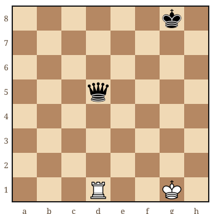
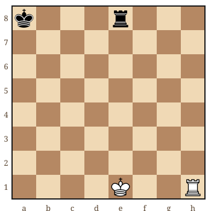
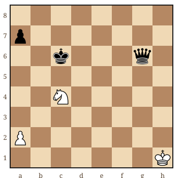
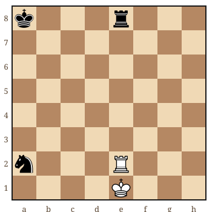
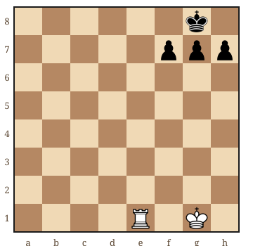

Pour commencer les exercices d'échecs, cherchez un coup simple et expliquez pourquoi il fonctionne. Voici cinq positions pour débutants, avec une correction à ouvrir après votre recherche : une capture, une réponse à l'échec, une fourchette, un clouage et un mat en un coup.
Vous pouvez tout résoudre directement sur cette page. Pour poursuivre hors ligne, retrouvez « Apprendre les Échecs, Volume 1 » de Nicolas Musicki, le guide complet proposé sur ce site, avec ses exercices et leurs solutions.
Une méthode pour chercher sans deviner
Dans mes cours, je demande de montrer la menace avant de proposer un coup. Cela permet de distinguer une solution comprise d'une case choisie au hasard. Prenez un échiquier si les déplacements restent difficiles à visualiser.
- Vérifiez le trait. Dans les cinq positions ci-dessous, les Blancs jouent. Commencez par regarder si leur roi est attaqué.
- Observez les contacts. Quelles pièces peuvent se prendre ? Quel chemin doit rester libre ? Quelle pièce protège la case d'arrivée ?
- Imaginez la réponse. Après votre coup, que peut faire l'adversaire ? Ne supposez pas qu'il va ignorer votre menace.
- Comparez votre explication. Ouvrez ensuite la correction. Si vous avez trouvé le coup sans comprendre la raison, rejouez la position.
Les lettres T, C et R désignent la tour, le cavalier et le roi ; « x » indique une capture, « + » un échec et « # » le mat. Si ces mouvements sont nouveaux, consultez d'abord les règles des échecs avec diagrammes.
Exercice 1 : quelle pièce pouvez-vous prendre ?
Les Blancs ont une tour en d1 et leur roi en g1. La dame noire est en d5, le roi noir en g8. Cherchez une capture immédiate, puis vérifiez si les Noirs peuvent reprendre votre tour.

Afficher la correction de l'exercice 1
Txd5 prend la dame. Les cases d2, d3 et d4 sont libres. Le roi noir est trop loin pour reprendre en d5. La valeur élevée d'une dame ne la protège pas : elle reste une pièce que l'on peut capturer lorsqu'elle est laissée en prise.
Retenez surtout cette habitude : avant de construire une combinaison compliquée, cherchez les captures disponibles. C'est l'un des réflexes abordés dans les erreurs fréquentes des débutants.
Exercice 2 : votre roi est attaqué
La tour noire e8 attaque le roi blanc e1. Pouvez-vous jouer votre tour h1 ? Trouvez plutôt un déplacement légal du roi. Plusieurs réponses sont possibles : il ne s'agit pas de deviner une unique case.

Afficher la correction de l'exercice 2
Rf2 convient. Rd1, Rf1 et Rd2 sont également légaux. Le roi quitte la colonne e, contrôlée par la tour noire. Aucun déplacement de la tour h1 ne permet ici de parer l'échec : votre priorité est de sauver le roi, même si un autre coup semble attirant.
Exercice 3 : attaquer le roi et la dame ensemble
Le cavalier blanc est en c4, le roi noir en c6 et la dame noire en g6. Trouvez une case depuis laquelle le cavalier attaquera ces deux pièces. Tracez ses déplacements en L si nécessaire.

Afficher la correction de l'exercice 3
Ce5+ réalise la fourchette. Depuis e5, le cavalier attaque c6 et g6. Les Noirs doivent déplacer leur roi ; après, par exemple, ...Rd6, vous pouvez jouer Cxg6 et prendre la dame. Cela illustre un gain de matériel, pas une garantie de gagner toute la partie.
La force du coup vient de l'échec. Une simple attaque de dame lui laisserait souvent le temps de s'échapper. Ici, le roi exige une réponse immédiate.
Exercice 4 : la capture tentante est-elle légale ?
Votre tour e2 voit le cavalier noir a2 sur sa rangée. Mais elle se trouve aussi entre votre roi e1 et la tour noire e8. Avez-vous le droit de jouer Txa2 ?

Afficher la correction de l'exercice 4
Non, Txa2 est interdit. Ce coup exposerait votre roi à la tour e8. La tour blanche est clouée contre son roi. Elle peut cependant rester sur la colonne e, par exemple avec Te3, ou capturer la tour noire par Txe8+. Une pièce clouée n'est donc pas toujours complètement immobile.
Exercice 5 : trouver le mat en un coup
Le roi noir g8 est derrière ses pions f7, g7 et h7. Votre tour est en e1. Trouvez le coup qui donne échec sans laisser au roi une fuite, une capture ou une interposition.

Afficher la correction de l'exercice 5
Te8# est un mat du couloir. La tour attaque le roi sur la huitième rangée et contrôle f8 et h8. Les pions noirs occupent f7, g7 et h7. Aucun ne peut intercepter l'échec et le roi ne peut pas prendre la tour e8. Toutes les défenses sont donc écartées.
Pour travailler ensuite la coopération du roi avec une pièce lourde, poursuivez avec les mats de base avec une dame ou une tour.
Que travailler après ces cinq positions ?
Reprenez d'abord l'exercice dont vous n'avez pas su expliquer la solution. Notez le point oublié : roi en échec, pièce non défendue, attaque double ou case de fuite. Cette petite trace vous aidera à repérer le même problème pendant une partie.
Le programme de progression de zéro à 500 Elo replace les exercices dans un entraînement plus large. Si vous jouez sur écran, notre méthode pour alterner problèmes, parties et analyse en ligne vous aide à organiser les séances.
Dans le guide complet de Nicolas Musicki, le chapitre 8 explique les motifs tactiques et l'annexe A.3 rassemble les solutions des exercices du livre. Les cinq positions de cette page constituent un entraînement en ligne complémentaire. Pour étudier le PDF, cherchez d'abord les réponses aux questions du chapitre avant de consulter l'annexe.
Vous trouvez le coup, mais pas toujours son explication ?
Nous pouvons reprendre vos positions et apprendre à vérifier les réponses adverses. Je propose un premier cours offert à Paris, à Versailles ou en visio.
Réserver mon cours offertPour continuer votre apprentissage
Vérifier les règles avant de calculerRetrouvez les déplacements et les réponses à un échec. → Reconnaître vos erreurs en partieRepérez les habitudes qui vous font perdre du matériel. → Organiser votre progressionIntégrez les exercices dans votre pratique. → Article rédigé par Nicolas Musicki, professeur d'échecs à Paris et Versailles
Retour à l'accueil | Me contacter
Questions fréquentes
Quels exercices choisir quand on débute aux échecs ?
Commencez par les captures simples, les réponses à un échec et les mats en un coup. Ajoutez ensuite les fourchettes et les clouages. Choisissez des positions dont vous pouvez expliquer la correction.
Faut-il réussir tous les exercices avant de jouer une partie ?
Non. Alternez les exercices et les parties. Revenez sur les positions manquées pour comprendre votre erreur, puis cherchez à reconnaître ce motif dans vos propres parties.
Quel PDF reçoit-on depuis cette page ?
Vous recevez le guide complet existant « Apprendre les Échecs, Volume 1 » de Nicolas Musicki, avec ses exercices et leurs solutions, depuis le formulaire du guide gratuit. Il s’agit du même PDF que sur les autres pages du site.
Est-ce un PDF de 100 exercices corrigés ?
Non. Cette page propose cinq exercices à résoudre en ligne. Le document offert est le guide complet de Nicolas Musicki, pas un recueil de 100 exercices ni un ouvrage d’un autre auteur.